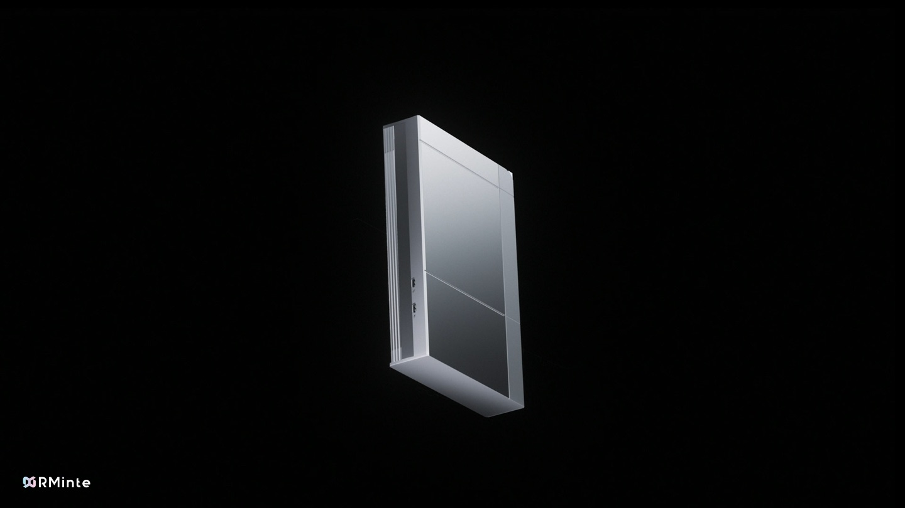
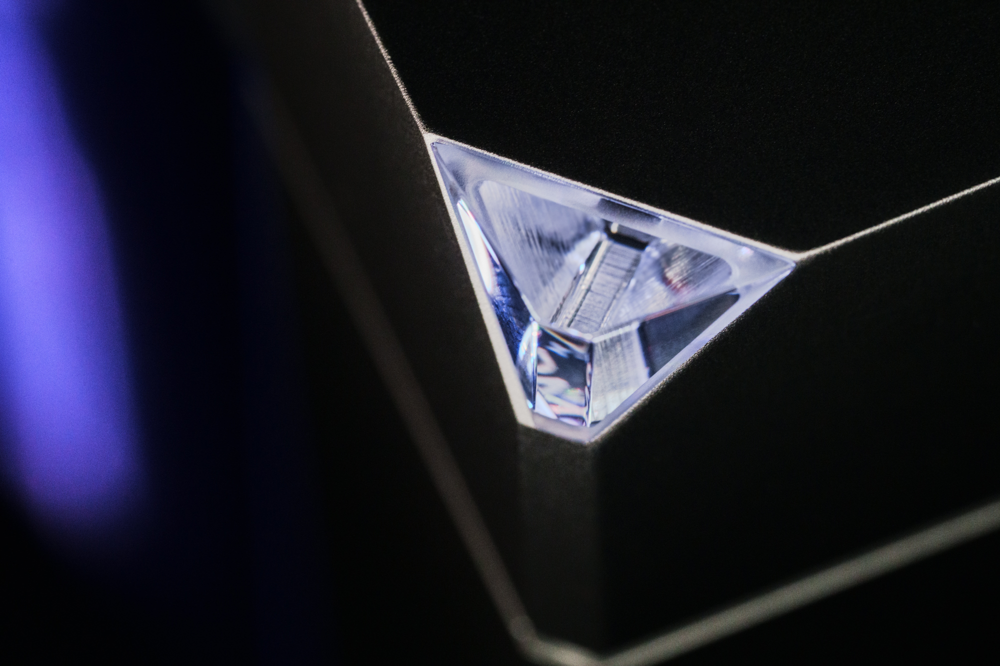
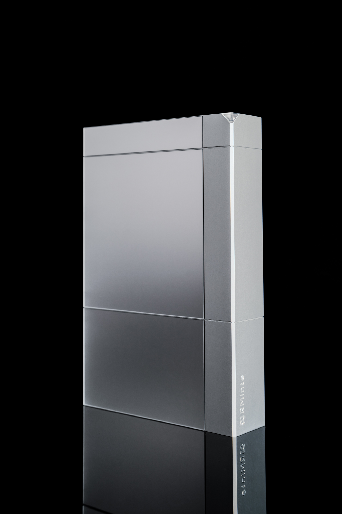
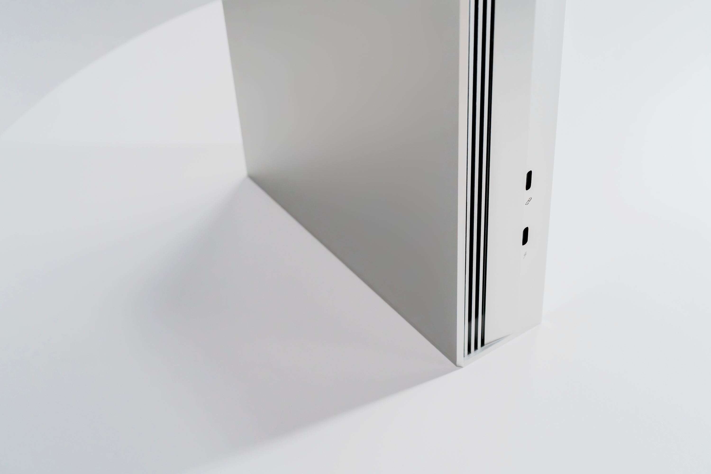
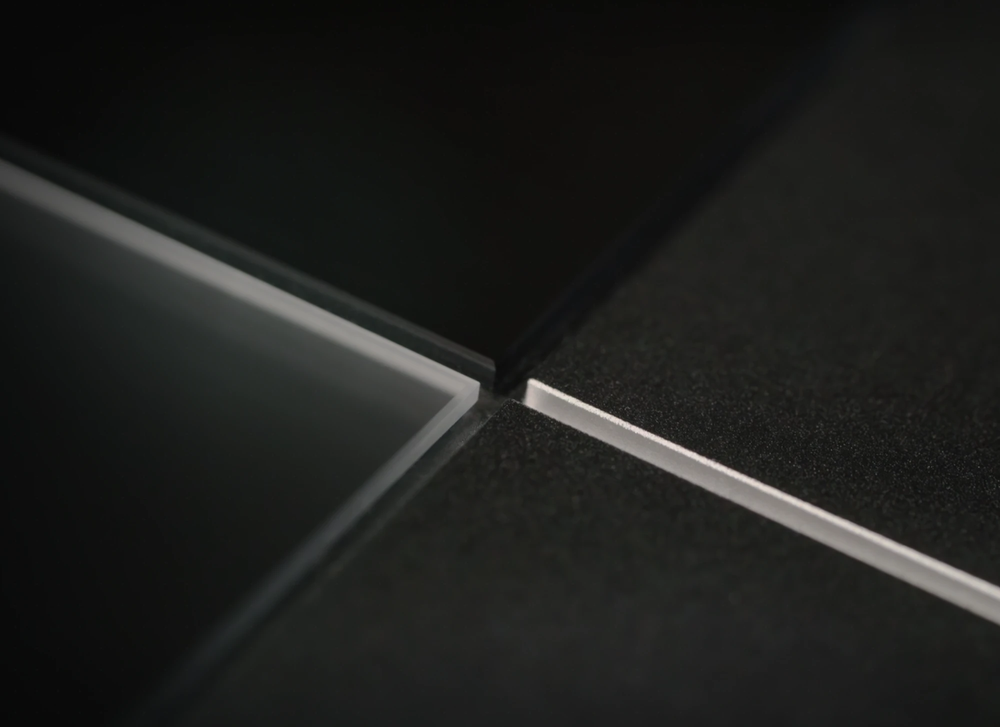
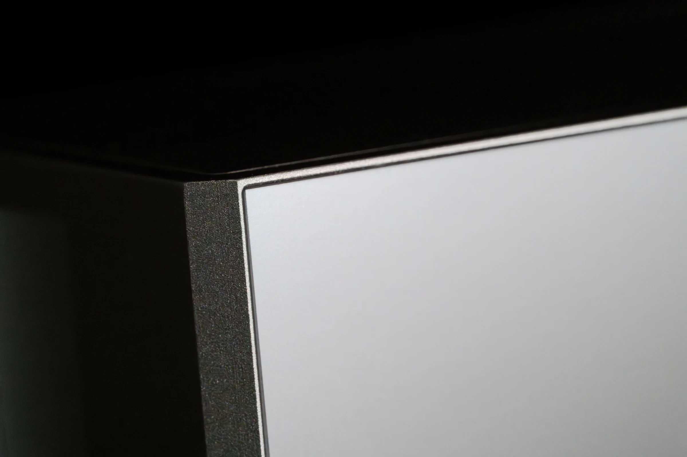

6063
Aluminium chassis
Machined from 6063 aluminium alloy, its reassuring heft and solidity begin with the material itself.
PURPOSE-BUILT FOR MODEL INFERENCE AND AI APPLICATIONS
RM-01 gives model inference and AI agent applications their own dedicated compute spaces, so intelligence takes root on site—working continuously and delivering real results.
INFERENCE ENGINE
Our inference engine pushes compute and GPU memory efficiency further while cutting runtime overhead—opening real headroom for larger models, longer contexts, and higher concurrency.
SYSTEM ORCHESTRATION
Precision hardware calls for unified command. TianshanOS coordinates every module and system behavior inside RM-01, keeping inference, applications, and storage working in concert. Bring RM-01 straight to your business site—no dedicated power, rewiring, or server room required.
HARDWARE ARCHITECTURE
Applications get their own runtime space; inference gets dedicated compute. RM-01 brings models, applications, and runtime into a single chassis, turning tight module collaboration directly into business productivity.
INSIDE RM-01
Inside the compact chassis, inference, applications, interconnect, and cooling each hold their own place. As the structure unfolds, the pathways between modules emerge—revealing the architecture of a complete local AI system at a glance.

Smart thermal control
TTITIANSHAN THERMAL INTELLIGENCE
Inference never pauses, and neither does cooling. Through TTO, TTI reads the thermal state in real time, while a neural network forecasts power shifts over the next 90 seconds and projects temperatures at 15, 45, and 90 seconds. It looks beyond the temperature of the moment—remembering how heat has been building. Before temperatures climb, airflow is already in place; as heat settles, fan speed eases back quietly. Fewer abrupt swings, effortless composure across any environment or workload.
Trained on real operating data from live devices. For sudden, unpredictable workloads, the base thermal curve, configured limits, and independent protection policies always hold the line underneath.
CONTINUOUS OPERATION
EricLake pairs ultra-thin custom blades, a bespoke motor, and an independent Z-shaped air duct to exhaust heat under high-concurrency loads. Refined through rounds of CFD simulation, its closed structure seals dust away from core components—built for full-load sprints and quiet, day-after-day operation alike.


MATERIAL & LIGHT
Light sweeps across the facets, tracing the sapphire’s crisp outline against the silver-white chassis. Exterior bonding joins the gemstone seamlessly to the surface while preserving every sharp, sculpted edge. Sapphire’s extreme hardness makes shaping and mirror polishing a test at every step—56 hours of carving and polishing distilled into this single moment of cool, crystalline brilliance.

TOUCH & SURFACE
A full face of velvet-touch glass softens harsh light into a gentle glow and feels remarkably warm beneath your fingers. From first glance to first touch, RM-01’s restrained craft speaks for itself.

CONNECTION
One cable for power. One cable for the network. Smart glasses, laptops, routers, phones, and tablets all become gateways to local AI—connecting the devices you already use to dedicated compute right beside you.
AI DELIVERY
Models and business applications live inside replaceable storage cards. Slide one into RM-01 and a tailored local AI solution is ready on the spot. One chassis—swap a card, and step seamlessly into an entirely new workflow.
PRECISION
6063
Machined from 6063 aluminium alloy, its reassuring heft and solidity begin with the material itself.

260 mesh
260-mesh fine sandblasting lends the metal a velvet-fine micro-texture—refined to the eye, crisp to the touch.

R0.25 mm
Glass edges finished to an R0.25 mm radius meet the aluminium chassis in a precision fit. Where two distinct materials join, true assembly craft shows.

＜0.03 mm
Assembly tolerances stay within 0.03 mm. That obsession with precision lives in every seam and edge, rewarding the closest inspection.
Scroll down to explore more craftsmanship